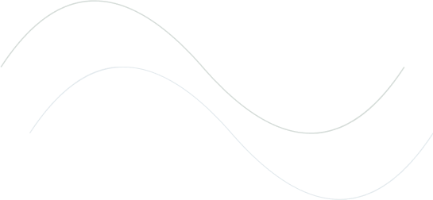

메인영역
Portfolio
성남시 식물원 웹사이트 리뉴얼 프로젝트
도심 속에서 자연을 경험할 수 있는 특별한 공간의 디지털 여정을 재정의합니다. 사용자 중심의 직관적인 인터페이스와 자연 친화적인 디자인 시스템을 통해 방문객들에게 새로운 경험을 선사합니다.

라인정보를 넘어, 식물원의 경험으로
성남시 식물원 홈페이지는 필요한 정보를 제공하고 있었지만 식물원이 가진 자연성과 공간의 분위기를 충분히 전달하지 못하고 있었습니다. 따라서 사용자가 계절의 변화를 직관적으로 경험하고 식물원의 브랜드 가치를 자연스럽게 느낄 수 있도록 리디자인을 진행했습니다.
기존 사이트 분석
자연·전시·문화 콘텐츠 소비 비중이 높은
20 – 40대 사용자
특성
- 자연에 관심이 많음
- 빠른 정보 탐색을 선호
- 시각적 SNS 콘텐츠에 익숙
방문 목적
- 식물원 정보 확인
- 프로그램 참여
- 계절별 식물 탐색
NEEDS
- 방문 전 식물원의 비주얼을 확인
- 현재 어떤 식물을 볼 수 있는지 파악
- 프로그램 종류·일정·대상 연령을 비교 후 신청
- 실용적 방문 정보 탐색
프로젝트 목표
사용자 친화적이고 직관적인 인터페이스로
방문객의 접근성을 높이고,
식물원의 아름다움을 효과적으로 전달하는
디지털 경험 제공
디자인 가이드
자연의 편안함, 계절의 변화, 살아있는 경험을 중심으로 식물원이 가진 공간적
가치를 디지털 환경에서도 감각적으로 경험할 수 있도록 설계했습니다.
Nature
식물원의 자연 친화적인
부분을 차용
Seasonality
다양한 식물들을 볼 수 있도록
계절별 콘텐츠 추가
Vitality
영상과 인터랙션을 통해
생동감 있게 표현
Color Guide
Background #F7F5EF
Font #2B2B2B
Main #2F4F3E
Blue point#6E8FA3
Yellow point#C9A86A
Red point#B56A5D
Typography
영문 · AMIRI
Botanical Garden
| H1 | 64px |
국문 · NANUMSQUARE NEO
성남시 식물원
| H2 | 56px |
국문 · MARUBURI
계절의 정원을 거닐다
| H3 | 32px |
| H4 | 24px |
| Body | 18px |
| Caption | 15px |
개선 전략
01
대형 타이포그래피 & 영상
메인 영역 진입 시 대형 타이포그래피와 영상을 설계해 몰입도를 강화했습니다.
02
그린 계열 컬러 통일
전반적인 컬러를 그린 계열로 통일하여 자연 친화적인 브랜드 이미지를 강화했습니다.
03
포인트 컬러 리듬
로고 컬러를 포인트로 활용하여 시각적 리듬을 형성했습니다.
04
브랜드 메시지 집중
핵심 메시지 일부에 포인트 컬러를 적용해 브랜드 메시지 집중도를 향상시켰습니다.
05
계절 인터랙션
계절별 이미지가 변하며 좋아하는 계절을 선택할 수 있는 인터랙션으로 사용자의 참여와 유대감을 높였습니다.
06
카드 레이아웃 & 접근성
카드 기반 레이아웃과 페이지 이동 없는 정보 구조로 콘텐츠 가독성과 접근성을 개선했습니다.
프로젝트 활용 툴
HTML
#시멘틱마크업#웹접근성
CSS
#스타일링#인터랙션구현
JavaScript
#이벤트처리#동적UI
React
#컴포넌트개발#상태관리
Figma
#UI디자인설계#컴포넌트제작
Git
#버전관리#형상관리
Premiere Pro
#영상편집#히어로영상제작
Photoshop
#이미지편집#이미지보정
Chat GPT
#AI협업#이미지생성
Claude
#AI협업#개발보조